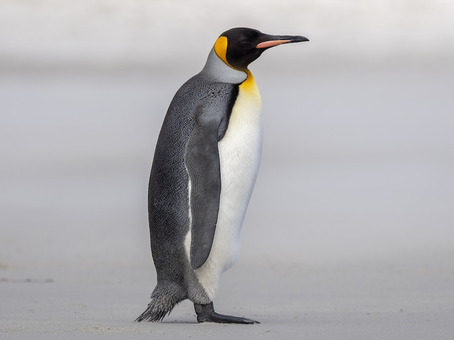

Penguins are flightless birds that thrive in the cold regions of the Southern Hemisphere, particularly in Antarctica. Known for their distinctive black-and-white plumage, they are excellent swimmers, using their flippers to glide through the water with incredible speed and agility. Penguins primarily feed on fish, squid, and krill, which they hunt in the icy waters. These social birds often gather in large colonies for breeding and warmth, relying on each other to survive harsh conditions. Despite living in such cold environments, some species, like the Galápagos penguin, inhabit warmer climates near the equator.
Penguins have a unique way of staying warm in freezing temperatures thanks to their thick layer of insulating feathers and a layer of fat called blubber. They undergo a molting process annually, during which they shed old feathers and grow new ones to maintain their waterproof and windproof coat. Unlike most birds, penguins drink seawater, as special glands near their eyes help remove excess salt from their bodies. Many species, such as the Emperor penguin, endure extreme conditions during breeding, with males incubating the eggs on their feet for months while females search for food. Sadly, penguin populations are threatened by climate change, overfishing, and pollution, making conservation efforts vital to their survival.
| Penguin | Region | Scientific Name |
|---|---|---|
| Emperor Penguin | Antarctica | Aptenodytes forsteri |
| King Penguin | Sub-Antartic | Aptenodytes patagonicus |
| Adélie Penguin | Antartica | Pygoscelis adeliae |